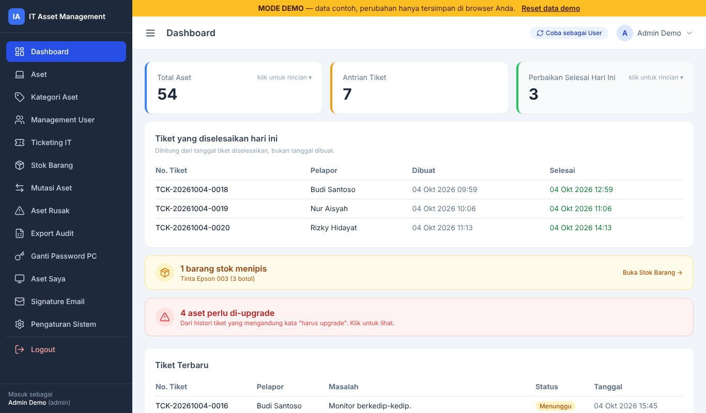
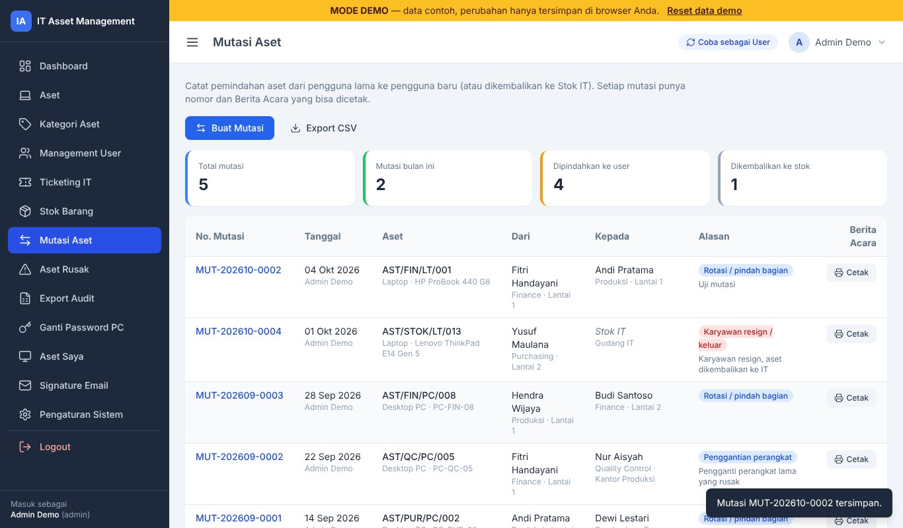
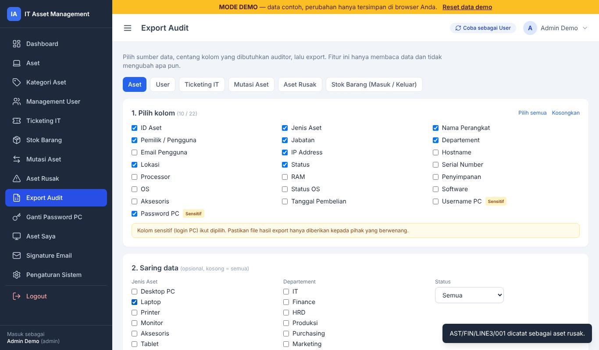
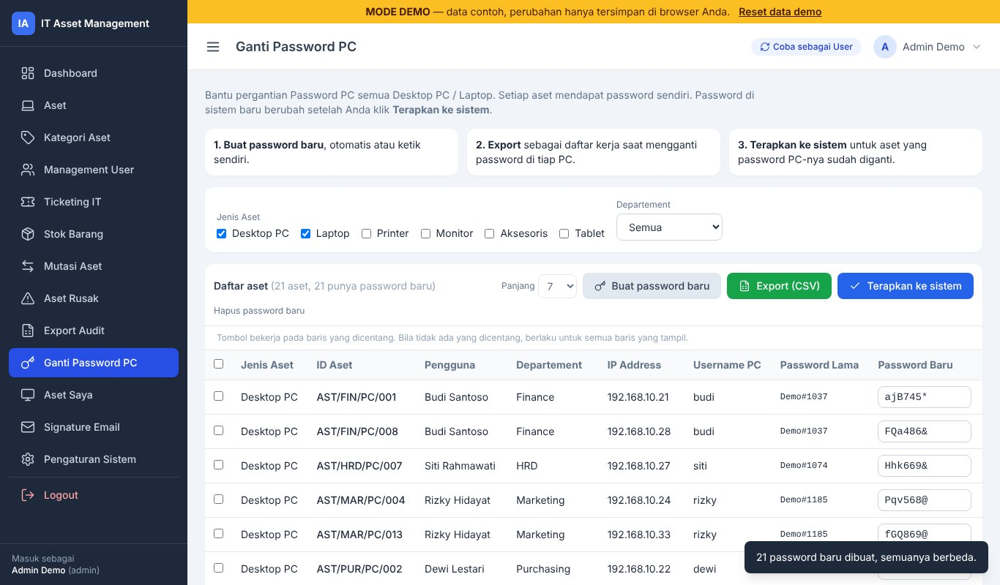
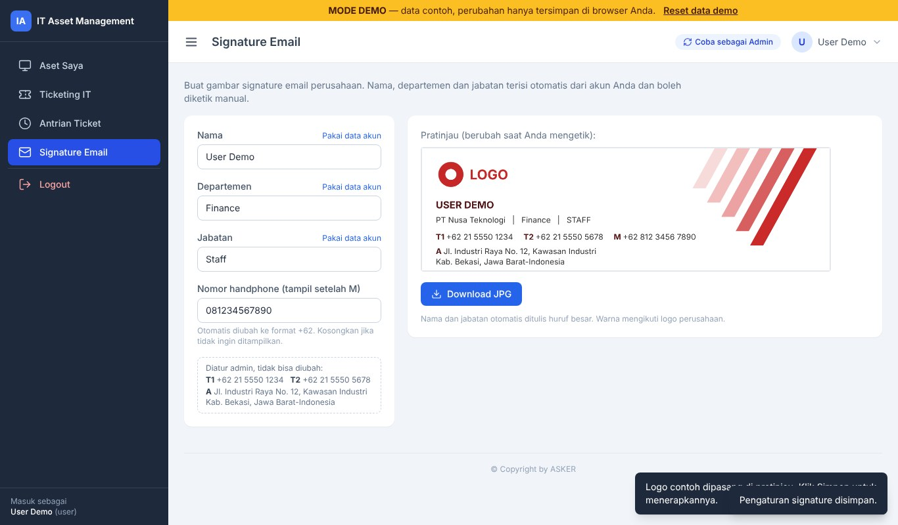

Fitur
Data AsetNomor aset otomatis, pengguna, lokasi, spesifikasi, software, aksesoris, label dan PDF.
Ticketing ITUser membuat tiket, admin memproses. Riwayat update dan detail pengerjaan tercatat.
Stok BarangBarang masuk dan keluar, rekap per kategori dan per user, peringatan restock.
Mutasi AsetSerah terima dan pemindahan aset dengan berita acara siap cetak.
Aset RusakDaftar aset rusak, lokasi penyimpanan, dan status perbaikannya.
Export AuditPilih sendiri data dan kolom yang diminta auditor, lalu export ke Excel.
Ganti Password PCPassword baru yang berbeda untuk tiap PC dan laptop, dengan daftar kerja.
Signature EmailGambar signature seragam untuk karyawan, warna mengikuti logo perusahaan.
Kop SuratLogo, nama, dan alamat perusahaan di semua dokumen cetak, PDF, dan file Excel. Diatur admin.
Scan QR AsetPindai label dengan kamera HP atau scanner USB untuk membuka detail aset.
PraktisNyaman di HP dan laptop, dua bahasa (Indonesia/English), import dan export Excel.
Cara memasang
- Unduh file ZIP di atas, lalu ekstrak ke
htdocs, misalnyaC:\xampp\htdocs\asker-it-asset. - Jalankan Apache dan MySQL.
- Buka
http://localhost/asker-it-asset/. Halaman instalasi terbuka otomatis. - Isi data database, nama sistem, dan akun admin pertama, lalu klik Instal sekarang.
- Login, lalu hapus file
install.phpdari server.
Panduan instalasi (PANDUAN_INSTALASI.md) dan panduan penggunaan bergambar 25 halaman (PDF) sudah ada di dalam ZIP.
Kebutuhan dan catatan
- PHP 8.0 atau lebih baru dengan ekstensi
pdo_mysql,mbstring,gd,zip. - MySQL atau MariaDB. XAMPP sudah cukup.
- Pustaka pendukung sudah ada di dalam ZIP, tidak perlu
composer install. - Dirancang untuk jaringan internal kantor. Jangan dibuka langsung ke internet tanpa pengamanan tambahan.
- Username dan password PC pada data aset disimpan sebagai teks biasa (data referensi IT). Pertimbangkan sebelum mengisinya.
- Lisensi MIT: bebas dipakai, diubah, dan dibagikan.
Tangkapan layar




Tangkapan layar diambil dari versi demo. Semua data di dalamnya adalah data contoh.
Coba dulu sebelum memasang
Demo bisa langsung dipakai tanpa instalasi. Perubahan hanya tersimpan di browser Anda.